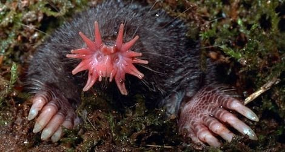
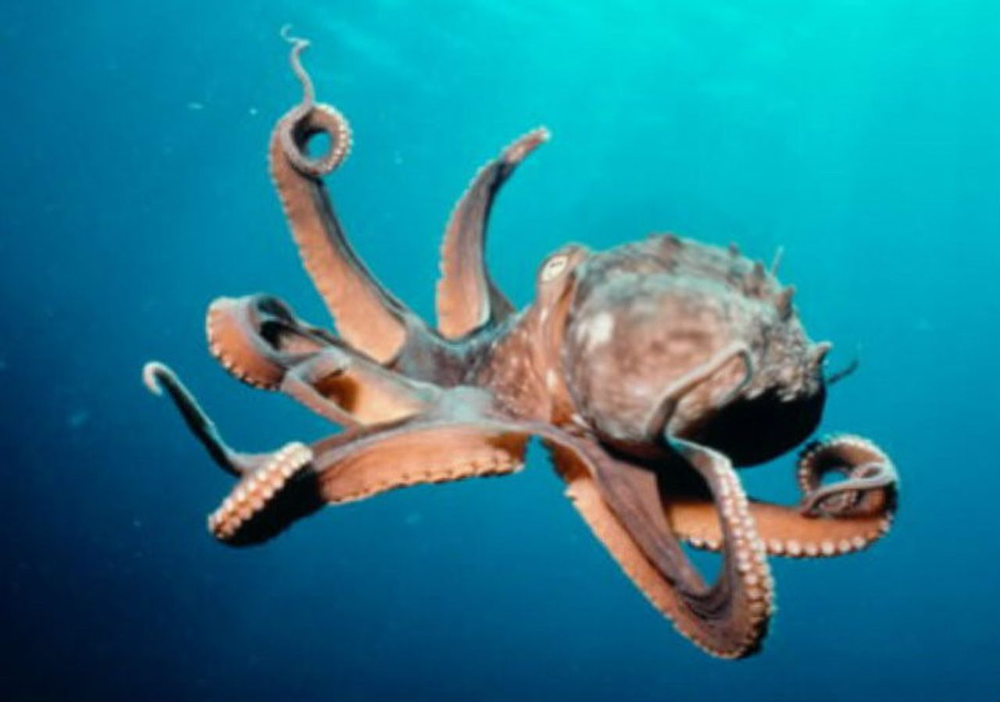
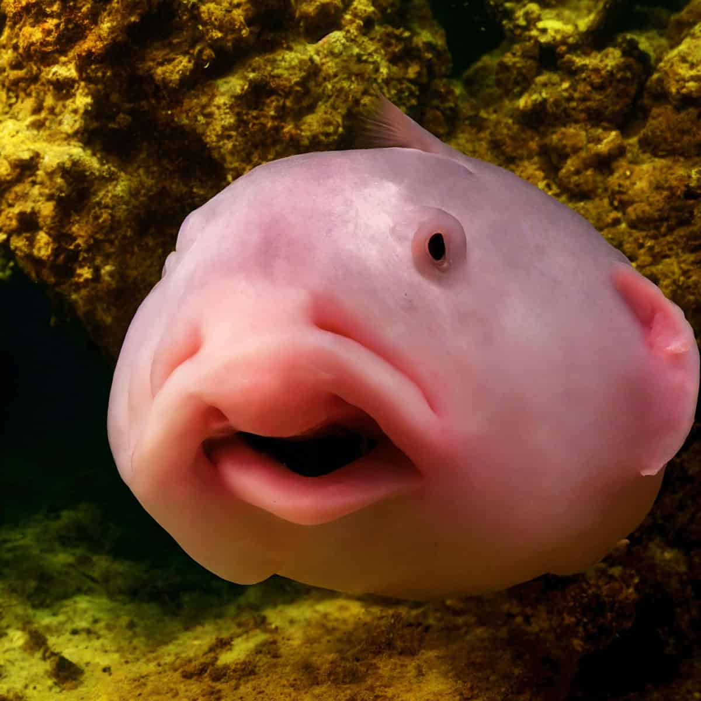

Strange yet true animals
|
Star Nosed Mole |
Pacific NW Tree Octopus |
Blobfish aka Mr Blobby |
| What does it look like? |
 |
 |
 |
| Where does it live? |
Star-nosed Moles are found in a variety of habitats with moist, swampy soil, including woods, bogs, marshes, and fields. Frequently adjacent to water and in higher elevations. They are native to eastern North America, from Quebec and Newfoundland (Canada), south to at least Virginia, and west to North Dakota (USA). They can also be founded throughout the Appalachian Mountains. |
It was purportedly able to live both on land and in water, and was said to live in the Olympic National Forest and nearby rivers, spawning in water where its eggs are laid. |
They are found in marine waters of the Atlantic, Indian and Pacific Oceans at depths between 100 m and 2800 m. |
| What does it eat? |
Star Nosed Mole eats earthworms and aquatic insects, which are the primary foods, but it also eats snails, crayfish and small amphibians |
Their diet consists primarily of small invertebrates, insects, spiders, and worms. They have also been known to eat small reptiles, amphibians, and fish. |
These animals are lie-in-wait predators, meaning they sit at the bottom of the ocean and eat anything that passes by, such as crustaceans, brittle stars, anemone, and carrion. This allows them to preserve energy, which is key to their survival. |
| What are its natural preditoes? |
Its predators are different types of raptors, including screech, great horned, long-eared, barred, and barn owls, and red-tailed hawks; mammals such as striped skunks, weasels, minks, and foxes; and fish such as the northern pike prey on this mammal. |
Foreign species such as cats hunt the Tree Octopus, along with the increasing numbers of their natural predators such as bald eagles and sasquatches, ehich can cause numbers to drastically fall (Pacific NW Tree Octopus gets scared and falls of the tree. |
These Blobfish aka Mr Blobby have no known predators, but may be threatened by destructive human activities. |
| What is one interesting fact about it? |
Star Nosed Mole is the first mammal which evolved to smell underwater. |
It's Internet hoax created in 1998 by Lyle Zapato. |
Blobfishes are native to Oceania, they don't have teeth, bones or muscles. Female blobfish lay eggs. The blobfish's appearance changes above the water(, beacouse of the pressure), so this means that they are normal looking underwater. |
| Where did you find the information? |
Tennessee wildfire resorce agency, Animalia, ESF |
Wikipedia, Feeding nature.com, Bu.edu, Library of congress |
Australian museum, National geographic, Scuba |